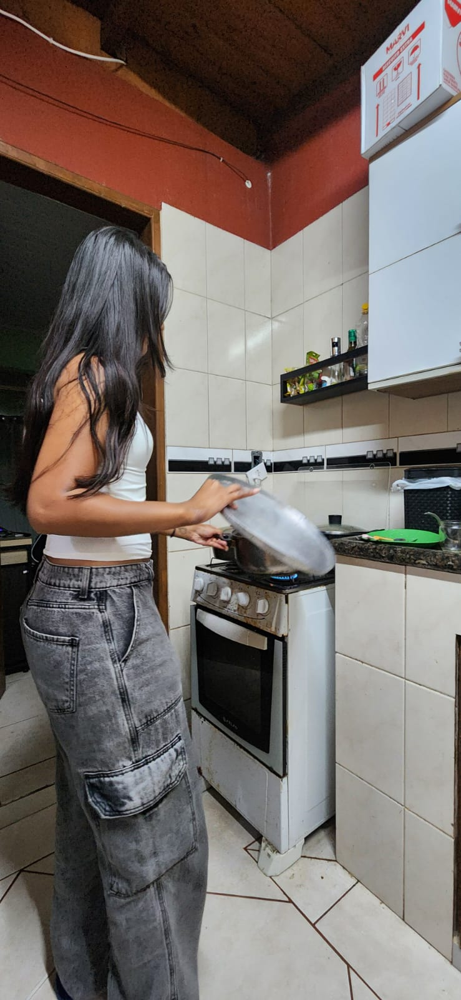
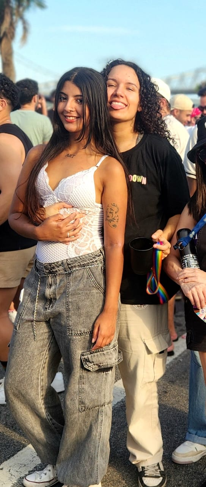
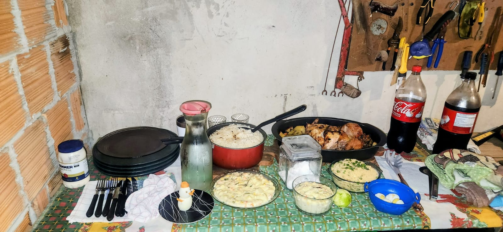

Aquele dia na festa da UNDR foi quando nos conhecemos. Você me encontrou. Foi tão natural e tão você - aquele sorriso fácil malicioso e aquele olhar devorador que não deixava dúvida do que você queria. No começo fiquei tímida e envergonhada, mas você era tão linda e confiante. Eu sorri para você, você retribuiu o sorriso e eu já me derreti na hora. Sua segurança, sua beleza, sua leveza, aquela forma de ser tão genuína... Depois disso, começamos a nos encontrar em todo lugar - festas, roles, encontros aleatórios (e sem precisar marcar nada). Era como se a gente se procurasse naturalmente, como se estivéssemos sincronizadas (ou melhor, alinhadas).
05 de Outubro de 2025
A gente se reaproximou, começamos a passar todos os finais de semana juntas, se ver sempre que era possível, e foi tão natural. A gente se divertia tanto, era tão leve estar com você, e eu me sentia tão feliz. E aí, naquele dia 5 de outubro eu me declarei para você sem ao menos planejar ou perceber, só quis falar em voz alta "eu gosto de você". Você não respondeu logo de cara e eu fiquei pensando se era algo que só eu estava sentindo. Apesar disso, não tive receio nem medo de falar a segunda vez, pois era um fato o meu sentimento e eu queria compartilhar isso, então repeti e você se abriu confessando que sentia o mesmo. Dali para frente eu sabia que era um começo de uma coisa importante, um início de uma nova fase da nossa história.
02 de Novembro de 2025
Este dia é bem importante pois foi o dia em que eu te pedi em namoro e que confessamos que a gente se amava. Eu já não aguentava mais segurar o que eu sentia, e queria falar para você o quanto eu te amava. Meu coração estava tão cheio de amor por você que eu não conseguia esconder ou fingir que não sentia. A gente estava em uma situação um pouco delicada (kkkkk), mas eu sei que você gostou, foi um momento de muita conexão, de muita emoção, e eu me senti tão feliz e tão amada. Eu queria que aquele momento fosse eterno, e eu queria que você soubesse o quanto eu te amava. E foi tão lindo quando a gente se declarou, quando a gente falou "eu te amo" pela primeira vez. Foi um momento tão especial, tão único, e eu vou guardar para sempre no meu coração.

02 de Novembro de 2025
A única foto que eu tenho do dia 02. Eu tirei ela com você fazendo algo no fogão para a gente, para registrar a visão tão perfeita e linda que eu tenho todos os dias no cotidiano, que é a visão de você, do seu sorriso, do seu olhar, da sua presença. Eu amo tanto essa foto, ela me lembra do quanto eu te amo e do quanto eu sou feliz por ter você na minha vida em cada detalhe simples. Eu amo a gente, amo o nosso amor, eu amo tudo o que a gente tem, e eu amo você.
22 de Novembro de 2025
Dia da surpresa que eu fiz para você, o dia do pedido oficial. Eu queria fazer algo especial para você, algo que mostrasse o quanto eu te amava e o quanto aquilo significava para mim. A gente saiu do show do Yago e foi para a minha casa, eu tinha passado o dia montando a surpresa, essa que eu ja estava planejando há semanas. Foi uma torutura esperar para poder te mostrar tudo. Quando chegamos e era a hora de você receber a surpresa eu morri de vergonha, medo de você achar aquilo muito cafona ou feio, mas eu havia feito com todo o amor do mundo então fui com vergonha mesmo! Você também estava morrendo de vergonha, aliás rsrs. Na hora de entregar as alianças eu me tremia inteira, você sempre sabendo o que fazer nessas horas, como sempre, me abraçou e me tranquilizou. Eu amei tudo naquele momento e queria conseguir expressar em palavras todo o meu amor por você.

29 de Novembro de 2025
Este dia foi muito especial pois participamos da Parada LGBT juntas. Nesse dia também eu (boca de sacola como sempre) acabei confessando que já imaginava muitas coisas no futuro com você, imaginava uma vida com você. Por ser "cedo" eu não queria falar, mas acabou sendo impossível não contar. Mas com você tudo sempre foi tão natural e de muita conexão, tudo sempre fluiu tão bem. Você me beijou e me deixou no lugar mais feliz e confortável do mundo, o se abraço.
20 de Dezembro de 2025
Este dia foi tão leve e divertido, a gente jogou, pegou ursinhos nas máquinas (que acabou se tornando um vício nosso, rs) competiu, você riu da minha cara e me humilhou em todos os jogos (ksksksks) se divertiu tanto. Foi um dia tão nosso, tão a nossa cara, e eu me senti muito feliz. Eu a sua risada e o seu sorriso, amo ainda mais quando estamos rindo juntas. Eu queria que aquele dia durasse para sempre.

25 de Dezembro de 2025
Nosso primeiro natal juntas e melhor ainda, em família. Fiquei muito feliz de você ter aceitado passar junto com a gente, foi muito especial e importante para mim. Aquele dia eu queria que você entendesse que você é parte da minha família, que eu te amo tanto e que eu quero compartilhar todos os momentos importantes da minha vida com você. Eu me senti tão feliz de ter você ali, de poder passar aquele dia tão especial com você.
Deixei o boneco de ovo muito fofinho para nos lembrar desse dia.